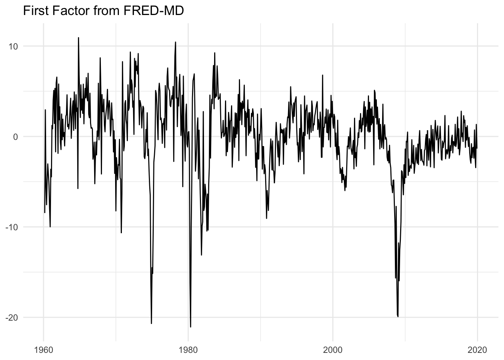

GitHub repo: https://github.com/rbaros001/ec522_ps4_baros.git
There appears to be a slight upward trend from January to December with the peak being in December and some small peaks in July and August. Over-time, consumption has increased as well to a higher sales level and following the same trend. The seasonal swings grow with the model which suggests that using logs reveals the true rates of changes and sales patterns.
| Term | Estimate | Std. Error | Statistic | p-value |
|---|---|---|---|---|
| ar1 | 0.8948 | 0.0355 | 25.2112 | 0e+00 |
| ma1 | -0.7374 | 0.0697 | -10.5855 | 0e+00 |
| ma2 | 0.2477 | 0.0623 | 3.9734 | 1e-04 |
| sar1 | 0.3679 | 0.0668 | 5.5098 | 0e+00 |
| sar2 | -0.2334 | 0.0665 | -3.5100 | 5e-04 |
| sma1 | -0.8845 | 0.0468 | -18.9150 | 0e+00 |
| constant | 0.0036 | 0.0001 | 33.5109 | 0e+00 |
| Term | Estimate |
|---|---|
| alpha | 0.3296 |
| beta | 0.0076 |
| gamma | 0.0002 |
| l[0] | 7.4122 |
| b[0] | 0.0008 |
| s[0] | 0.3263 |
| s[-1] | 0.0315 |
| s[-2] | -0.0048 |
| s[-3] | -0.0353 |
| s[-4] | 0.0251 |
| s[-5] | 0.0556 |
| s[-6] | 0.0122 |
| s[-7] | 0.0250 |
| s[-8] | -0.0609 |
| s[-9] | -0.0608 |
| s[-10] | -0.1578 |
| s[-11] | -0.1562 |
For the specifications for the ARIMA model were ARIMA(1,0,2)(2,1,1)[12] with drift. This tells us there was a seasonal difference at a lag of 12, indicating the series was differenced once against the same month from the previous year. The constant 0.0036, and total differencing d+D=1, this indicates a drift term. This indicates the year-over-year growth is trending upward over time.
The three letters indicate a Holt-Winters Additive model with additive error, additive trend, and additive seasonality. Additive error means random forecast errors are added directly to predicted level, trend, and seasonal components with assumed \(\sigma^2\) = 0.0007 across the log(sales) series. Additive trend means the slope is added to the level at each time step. We see that log(sales) is increasing at a constant amount each period, the original sales variable is increasing by a constant percentage over time. The smoothing parameter \(\beta\) = 0.0076 shows that the slope changes very slowly and remains nearly constant. Additive seasonality mean the seasonal effects are added to the level and trend, meaning there is a constant magnitude on log(sales). \(\gamma\) = 0.0002 indicates the seasonal pattern is practically fixed over time.

| Model | Statistic | p-value |
|---|---|---|
| arima | 120.39 | 0 |
The high lb_stat means the model failed to capture all the underlying patterns, therefore the residuals do not reflect white noise.
There are 216 different forecast origins in this TS-CV.
| Model | RMSE | MAE |
|---|---|---|
| arima | 81.43 | 65.65 |
| ets | 94.35 | 72.31 |
| snaive | 161.26 | 136.63 |
The first and last forecasts for this are January 2002 to December 2019. The model that forecasts the most accurately is the ARIMA model. The ARIMA model wins for both the RMSE and MAE.
| Statistic | p-value | Alternative |
|---|---|---|
| -2.9062 | 0.004 | two.sided |
The DM statistic is -2.9062 with a p-value of 0.004042 over one forecast horizon with quadratic loss. We can reject the null hypothesis that ARIMA and ETS have euqual froecast accuracy. The DM test statistic tells us that the ARIMA model produces significantly more accurate one-step ahead forecasts.
| Model | RMSE | MAE |
|---|---|---|
| arima | 81.43 | 65.65 |
| combo | 85.19 | 66.77 |
| ets | 94.35 | 72.31 |
| snaive | 161.26 | 136.63 |
Combo beats ETS but slightly falls short of ARIMA for both RMSE and MSE. The correlation between the forecast errors report to be 0.8792931. Since the combination gives equal weights to both models, the ETS has larger RMSE and MAE with increases the errors of the combination. The DM statistic tells us the ARIMA model is significantly more accurate than the ETS model
RMSE table, DM test results, and written responses to part 4. report the numbers from saveRDS()
The date range of the first and last forecast is January 03, 1960 to January 10, 2019. The expanding window generates 120 forecasts per variable with a total of 960 forecasts.
| Series | Statistic |
|---|---|
| gdp | 0.5130384 |
| cons | 0.4598547 |
| inv | 2.4927057 |
| emp | 0.1956584 |
| infl | 0.2084055 |
| unrate | 0.1988068 |
| ffr | 0.3902989 |
| gs10 | 0.3610310 |
| Series | Statistic |
|---|---|
| gdp | 0.5693241 |
| cons | 0.5268484 |
| inv | 2.5212629 |
| emp | 0.2277561 |
| infl | 0.2069608 |
| unrate | 0.2153966 |
| ffr | 0.4973504 |
| gs10 | 0.3789663 |
VAR(1) forecasts better for all variables except for inflation rate (infl). The smaller forecast may be better because there is less noise and avoids out of sample estimation error and overfitting.
| Variable | VAR(1) | VAR(4) | BVAR(4), lambda = 0.3 | BVAR(4), lambda = 0.05 |
|---|---|---|---|---|
| gdp | 0.513 | 0.569 | 0.539 | 0.567 |
| cons | 0.460 | 0.527 | 0.486 | 0.495 |
| inv | 2.493 | 2.521 | 2.385 | 2.698 |
| emp | 0.196 | 0.228 | 0.211 | 0.315 |
| infl | 0.208 | 0.207 | 0.197 | 0.330 |
| unrate | 0.199 | 0.215 | 0.203 | 0.216 |
| ffr | 0.390 | 0.497 | 0.414 | 0.358 |
| gs10 | 0.361 | 0.379 | 0.359 | 0.362 |
The BVAR(4) with \(\lambda\) = 0.3 has lower values compared to OLS VAR(4). The BVAR(4) adds a prior distribution which shrinks estimated parameters towards simpler baselines which reduces overfitting. Compared to VAR(1), the BVAR(4) with \(\lambda\) = 0.3 estimates are much higher. This is most lively due to more noise from BVAR(4) since there are more time lags. VAR(1) has fewer degrees of freedom to estimate which keeps the forecast variance low. With BVAR(4) and \(\lambda\) = 0.05, this tells the model could be suffering from over shrinkage causing the model to ignore real dynamic patterns.
The RMSE for VAR(1) may not be a fair estimate of how accurately it will forecast in the future because the RMSE is still relatively large.
| Statistic | p-value | Alternative |
|---|---|---|
| 2.1366 | 0.0347 | two.sided |
| Statistic | p-value | Alternative |
|---|---|---|
| 0.9151 | 0.362 | two.sided |
The DM test statistic for GDP is statistically significant and tells us that the BVAR(4) outperforms and is more statistically accurate to the VAR(4) model. The DM test statistic for unemployment rate was not statistically significant between the two models which signals that the models give roughly the same forecast performance.
The DM test statistics for GDP and Unemployment rate tell us that VAR(1) could still be the best option. More comparisons would need to be run to confidently conclude this.
include plot, results, and written answers to part 5
The transformation differences depends on what we are interested in observing. The first difference of FEDFUNDS removes randomness and give us the a stationary rates of change. The growth rate for INDPRO was taken because the variable could have exhibited seasonality and therefore to understand the true underlying growth of this variable, we would find the log of the variable * 100. The first difference measures absolute change, the growth rate measures the percentage change over time.
| Variable | Transformation Code |
|---|---|
| INDPRO | 5 |
| PAYEMS | 5 |
| CPIAUCSL | 6 |
| FEDFUNDS | 2 |
INDPRO: code 5, growth rate. PAYEMS: code 5, growth rate. CPIAUCSL: code 6, change in growth rate. FEDFUNDS: code 2, first difference
| Metric | PC1 | PC2 | PC3 | PC4 | PC5 |
|---|---|---|---|---|---|
| Standard deviation | 4.2580 | 2.9938 | 2.9231 | 2.5972 | 2.2953 |
| Proportion of Variance | 0.1498 | 0.0741 | 0.0706 | 0.0558 | 0.0435 |
| Cumulative Proportion | 0.1498 | 0.2239 | 0.2945 | 0.3503 | 0.3938 |
The principal components are estimates of the dynamic factors. These are linear combinations, weighted averages, of all the data. The share of the variation in all 121 series of the first three factors explain how much these dynamic factors move together. The first three factors explain 29% of the variation in all of the series. The first factor, PC1 = 0.149840, explains the real activity factor. The second, PC2 = 0.223910, explains the inflation factor. The third, PC3 = 0.294530, explains price variables.

| Variable | Abs. Correlation |
|---|---|
| PAYEMS | 0.8416 |
| IPMANSICS | 0.8404 |
| USGOOD | 0.8390 |
| INDPRO | 0.8220 |
| MANEMP | 0.8028 |
| IPFPNSS | 0.7903 |
| CUMFNS | 0.7779 |
| DMANEMP | 0.7769 |
| Variable | Abs. Correlation |
|---|---|
| CUSR0000SAC | 0.7469 |
| DNDGRG3M086SBEA | 0.7391 |
| CUSR0000SA0L2 | 0.7279 |
| CPIAUCSL | 0.7198 |
| CUSR0000SA0L5 | 0.7020 |
| CPITRNSL | 0.6807 |
| PCEPI | 0.6796 |
| CPIULFSL | 0.6570 |
Factor 1: The 8 most correlated: Based on thee series and the plot, it sees as though the factors capture economic production and activity.
Factor 2: The 8 most correlated: Based on these series and the plot, it seems as though the factors capture consumption variables, or the Consumer Price Index (CPI). We can see this with the various dips due to recessions.
| RMSE | Statistic |
|---|---|
| RMSE_AR | 0.6168431 |
| RMSE_FA | 0.5887272 |
The RMSE_AR = 0.617 and RMSE_FA = 0.589, which matches the numbers found in class. We couldn’t estimate the factors once using the full sample for the horse race because this introduces information leakage which invalidates out of sample forecasts.
| Model | series | forecasts | RMSE_AR | RMSE_FA | MAE_AR | MAE_FA | DM_pvalue |
|---|---|---|---|---|---|---|---|
| 1 | CPIAUCSL | 349 | 2.1079 | 1.8937 | 1.5777 | 1.3494 | 4e-04 |
The factors improve the forecast of 12-month CPI inflation. The RMSE drops by about 10.43% and the MAE drops by about 14.56% and the difference is statistically significant.
It was very interesting to see how the different forecast models opperrate and how they compare to each other.
When simple models are hard to beat, this indicated that adding extra layers of complexity introduces more noise into the estimation. With less variables, there is lower estimation error and better out-of-sample generalization. Shrinkage, equal weights, and factors all try to add structure to the data to try to get more accurate results but this also introduces bias. There was a pattern of when the models increased complexity, there were larger errors, which makes sense because bias is being introduced to the model.